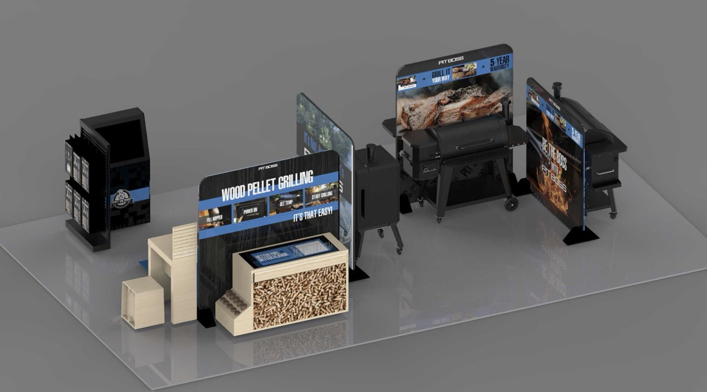
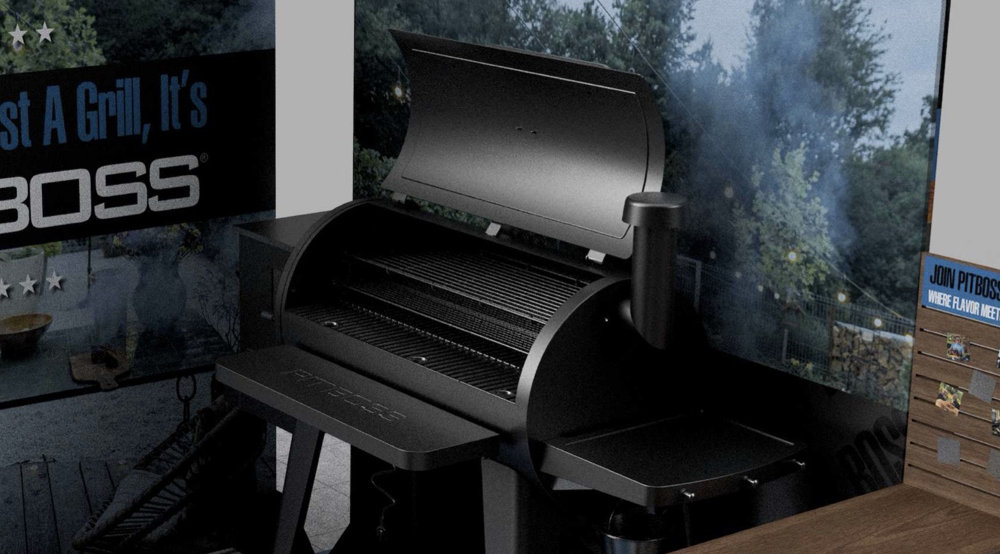
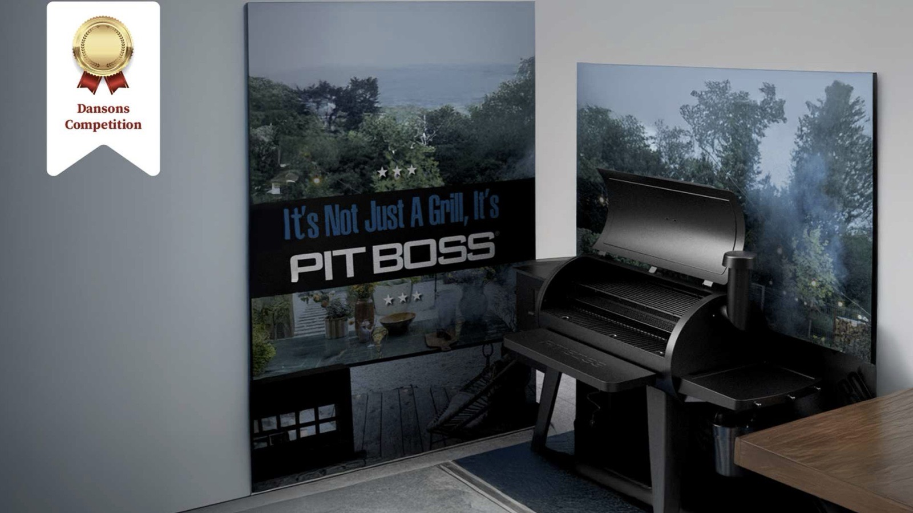

The final display
The grill stands in the middle, with the story of what it does around it.
Accessories and pellets sit within reach, so the questions a shopper has, what it cooks, what it needs, what it costs to run, are answered in one spot.



